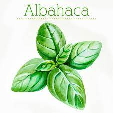
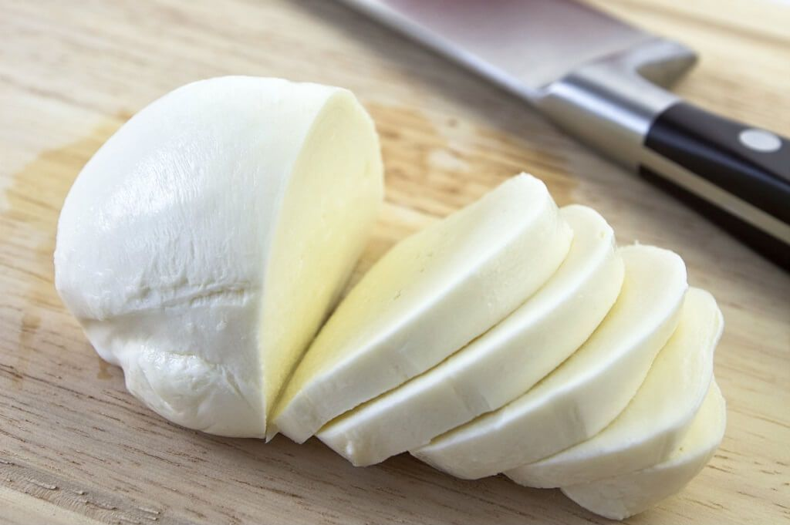

Tutorial HTML
formato de texto
y este?
existe?
OMG
este es el más pequeño
Para cambiar el formato de un texto, podemos utilizar las etiquetas b, i o u, entre otras.
Las palabras entre u aparecen en subrayadas
las palabras entre i aparecen en cursiva
laspalabras entre b son negrita
Magia
Listas
- Tomates
- mozzarella
- albahaca
- cortar los Tomates
- cortar la mozzarela1
- cortar la albahaca
- Mezclar todo
Imágenes

INGREDIENTES:



Ver un tutorial
Ingredientes